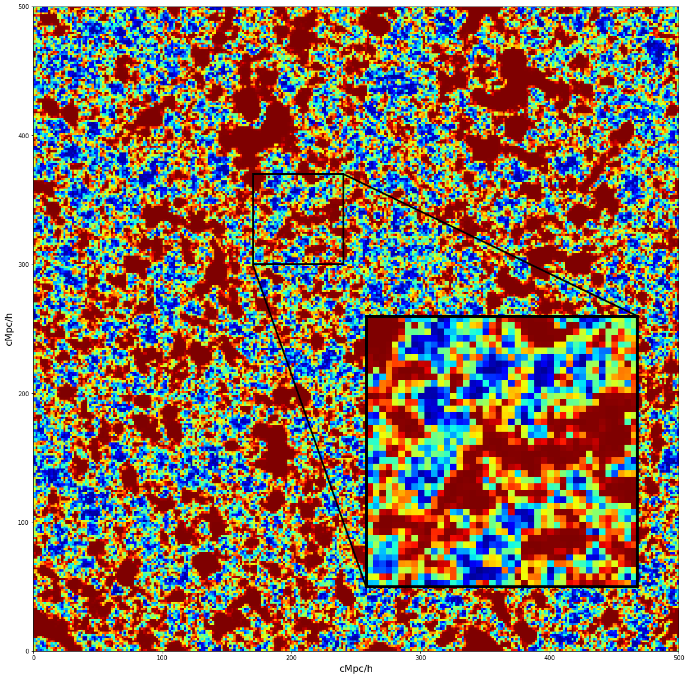
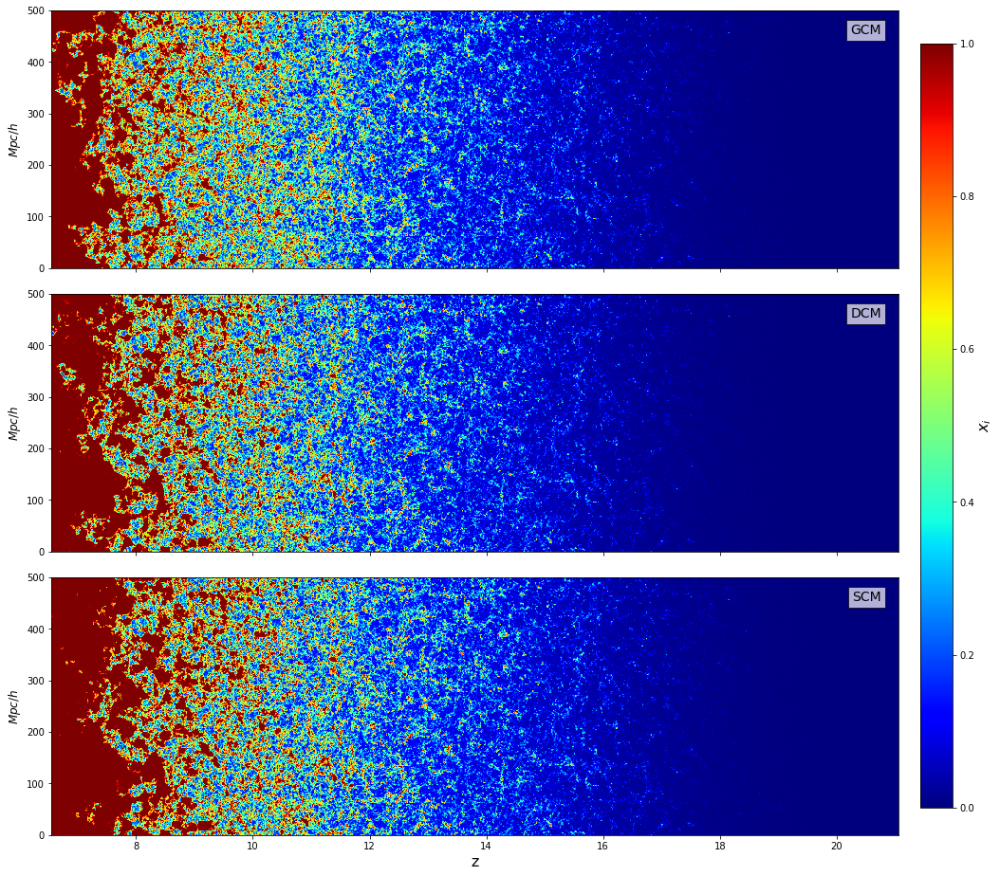
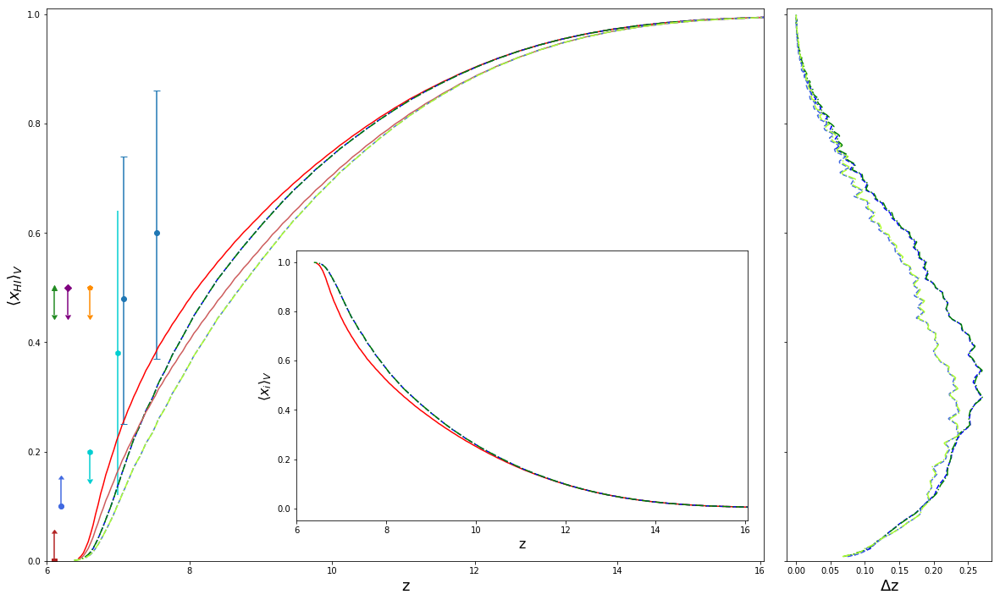

Michele Bianco
Sussex House, BN2 9RH Brighton, UK
About
My main focus is the study of the Epoch of Reionization (EoR) and with the help of Radio-Transfer and N-body simulation, we provide numerical support for the Low-Frequency Array (LOFAR) and Square Kilometre Array (SKA) EoR experiments.
These simulations playing a crutial role in the preparation and understanding of the magnitude and properties of the expected signals.
Current & Past Projects
DECI-15 - pending
In the current project we will significantly extend the previous work, by using detailed time-evolution information obtained from extremely high-resolution radiative-hydrodynamic and N-body simulations to improve our sub-grid models further and make them still more realistic. We will then apply these results to large-scale EoR RT simulations.
DECI-14 - MareNostrum & Piz Daint Supercomputer
In this project we have ran a series of large scale radiative transfer (RT) simulations investigating the effect of halos and gas clumping with local density. We successfully reproduced the local halo abundances and clustering, for a given local density, found in simulations that we thus used as sub-grid models in large-volume simulations, where such small-scale structures are not resolved.
Detailed methodology and implementation of models will be submitted shortly (M. Bianco et al 2019, in prep.).

RT simulation slice with zoom

Radio telescope output simulation

Reionization History:
Simulation vs Observation
Simulation vs Observation
Education
Doctorate in Astrophysics
2017 - present
University of Sussex, United Kingdom
Master Degree in Astrophysics
2015 - 2017
Ludwig-Maximillians-University LMU Munich, Germany
Bachelor of Science in Physics & Mathematics
2011 - 2014
University of Fribourg UNIFR, Switzerland
Training
Skills
As part of my PhD, I work with series of a High Performaces Computers (HPC) part of the Partnership For Advanced Computing in Europe (PRACE).▶ JURECA, Jülich Research on Exascale Cluster Architectures JSC
(Project DECI-15, at present)
▶ JUWELS, Jülich Wizard for European Leadership Science JSC
(Project DECI-15, at present)
▶ Piz Daint, Swiss National Supercomputer Centre CSCS
(Project DECI-14, Apr. 2017)
▶ MareNostrum IV (2017), Barcellona Supercomputing Centre BSC
(Project DECI-14, Apr. 2017)
▶ APOLLO Cluster, permanent account at the University of Sussex
Programming languages:
▶ Python (NumPy, SciKit, Pandas, TensorFlow, Keras, ...)
▶ C/C++
▶ Fortran (2003)
▶ HTML/CSS
▶ Batch Script
Astronomical and Scientific tools:
▶ DS9, TopCat, Aladin Sky Atlas
▶ R, Matlab, Wolfram Mathematica, Maple (2017)